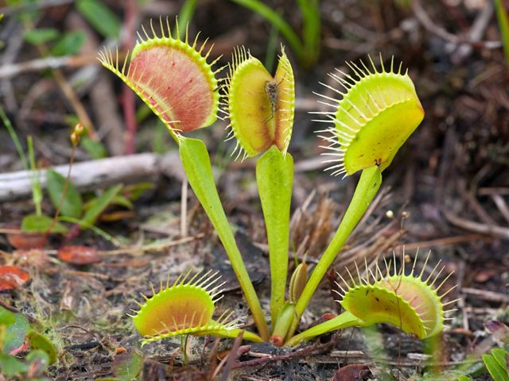
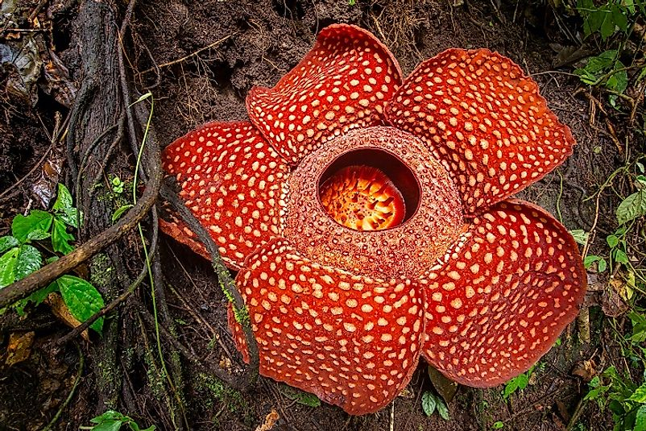
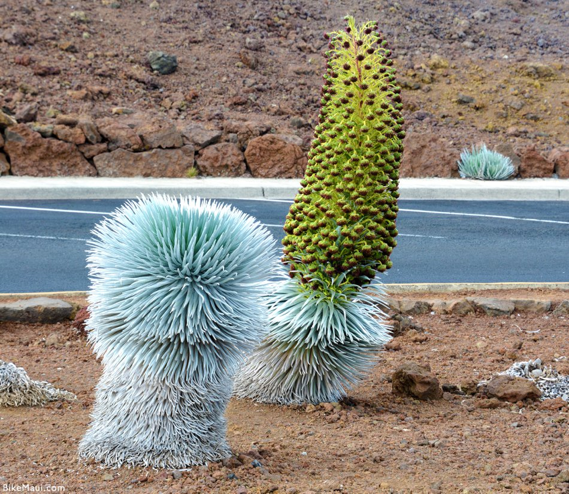
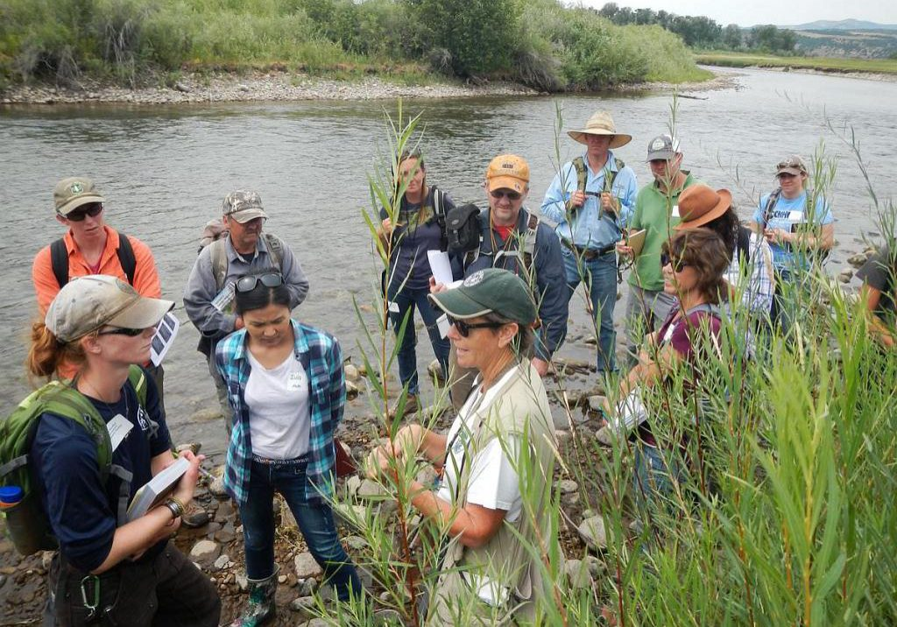
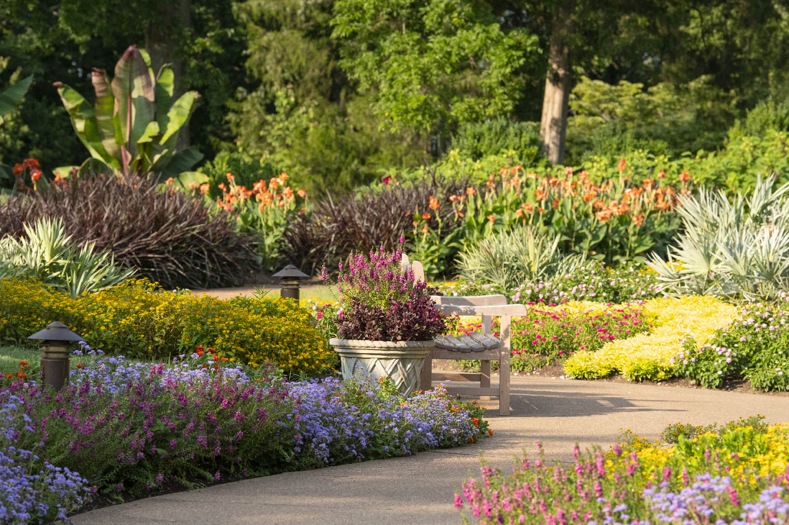
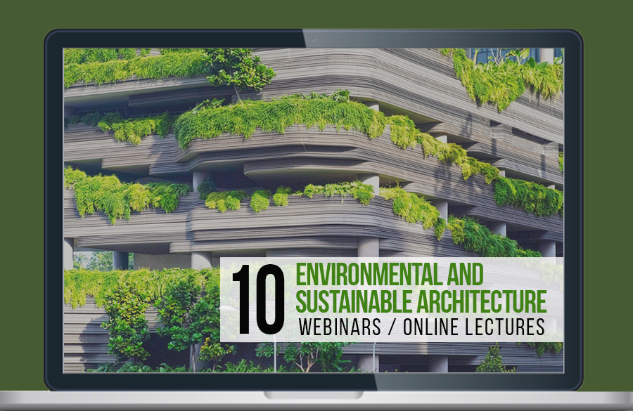
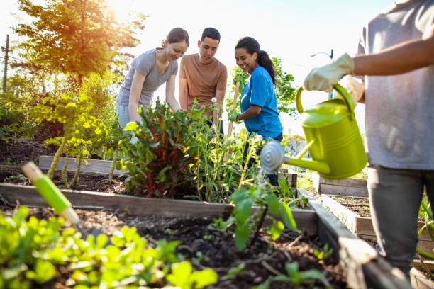

Plant conservation is vital for maintaining the health and diversity of ecosystems, which in turn supports all life on Earth. Plants are the foundation of most ecosystems, providing food, oxygen, and habitat for countless species, including humans. They play a crucial role in regulating the climate, maintaining soil health, and purifying water. Without plants, the planet's ability to sustain life would be severely compromised.
However, plant species worldwide are facing significant threats due to human activities. Habitat destruction, driven by urbanization, agriculture, and deforestation, is one of the leading causes of plant species decline. Climate change exacerbates these challenges, altering the environments where plants have evolved to thrive, leading to shifts in growing seasons, increased frequency of extreme weather events, and changes in water availability. Invasive species, pollution, and overharvesting also contribute to the loss of plant diversity.
Conserving plants is essential not only for the environment but also for human well-being. Many plants have medicinal properties, providing the basis for numerous pharmaceuticals. The loss of plant species could mean the loss of potential cures for diseases. Additionally, plants are critical for food security, as they form the basis of agricultural systems. Conserving wild relatives of crops is particularly important as they hold genetic diversity that can be crucial for breeding more resilient and productive crops.
Efforts to conserve plants include the creation of protected areas, such as national parks and nature reserves, which safeguard habitats from development and destruction. Botanical gardens and seed banks also play a significant role by preserving plant species outside their natural habitats. These institutions collect, store, and sometimes propagate rare and endangered plants, ensuring their survival even if their natural habitats are lost.
Public education and awareness are critical components of plant conservation. By understanding the importance of plants and the threats they face, people can take action to protect them. This includes supporting conservation initiatives, adopting sustainable practices, and advocating for policies that protect natural habitats. Through these efforts, we can help ensure that the world's plant diversity is preserved for future generations.
ENDANGERED SPECIES
1.
Venus Flytrap (Dionaea muscipula): This unique carnivorous plant native to North Carolina is at risk due to habitat loss and illegal poaching.
2. Rafflesia arnoldii: Known as the "corpse flower," this giant flower found in Southeast Asia is endangered due to deforestation and habitat destruction.
3. Western Prairie Fringed Orchid (Platanthera praeclara): This beautiful orchid native to North America is threatened by habitat loss and changes in land use.
4. Franklinia (Franklinia alatamaha): This tree, once found in the southeastern United States, is now considered extinct in the wild due to habitat destruction.
5. Hawaiian Silversword (Argyroxiphium spp.): These unique plants, found only in Hawaii, are endangered due to habitat loss, invasive species, and climate change.
6. Amur Leopard Tree (Phellodendron amurense): This tree, native to eastern Asia, is endangered due to overharvesting for its medicinal properties.
Remember, this is just a small selection of endangered plants. There are many more out there that need our attention and conservation efforts. Let's do what we can to protect these precious species!

Venus Flytrap

Rafflesia Arnoldii

Western Prairie Fringed Orchid

Hawaiian Silversword

Amur Leopard Tree
NATIVE PLANT
Native plants are species that naturally occur in a specific region or ecosystem. They have adapted to the local climate, soil conditions, and other factors over time. Using native plants in landscaping and gardening has many benefits. One major advantage of native plants is their positive impact on biodiversity. They provide habitat and food sources for local wildlife, such as birds, butterflies, and bees. By incorporating native plants into our landscapes, we can support a healthy and diverse ecosystem. Another great thing about native plants is their ability to conserve water. Since they have adapted to the local climate, they are well-suited to the rainfall patterns of the region. Once established, native plants typically require less water, reducing the need for irrigation. This not only helps conserve water resources but also saves you time and money on watering. Native plants are also known for their low maintenance nature. Since they are adapted to the local environment, they often have natural defenses against pests and diseases. This means you'll spend less time and effort dealing with chemical interventions and more time enjoying your garden. When it comes to soil health, native plants are champions. Their deep root systems help improve soil structure, preventing erosion and promoting water infiltration. Additionally, native plants contribute to nutrient cycling, enhancing overall soil health. So, by incorporating native plants into your garden, you're not only beautifying your space but also taking care of the soil beneath. Native plants also hold cultural and historical value. They often have deep connections to the traditions and heritage of a region. By using native plants in your landscaping, you can celebrate and preserve the unique cultural significance of your area. Now, let's talk about some examples of native plants in different regions. In North America, you'll find beautiful native species like oak trees, milkweed, coneflowers, and blueberries. These plants are not only stunning but also play important roles in the local ecosystem. If we hop over to Australia, you'll encounter a whole different array of native plants. Eucalyptus trees, kangaroo paws, grevilleas, and banksias are just a few examples of the diverse flora found there. These plants have adapted to the unique Australian climate and are essential to the country's biodiversity.

THREATHS TO PLANTS
1.
Habitat loss: Due to deforestation, urbanization, and agricultural expansion, many plant habitats are being destroyed or fragmented, leading to a loss of biodiversity.
2.
Climate change: Rising temperatures, extreme weather events, and changing rainfall patterns can negatively impact plant populations. Some plants may struggle to adapt to these changes, leading to decreased growth and reproduction.
3. Invasive species: Non-native plants can outcompete native species for resources, disrupt ecosystems, and reduce the diversity of plant communities.
4. Pollution: Air and water pollution can have detrimental effects on plants. Pollutants can damage plant tissues, reduce photosynthesis, and inhibit plant growth.
5. Overharvesting: Unsustainable harvesting of plants for timber, medicine, or ornamental purposes can deplete populations and threaten their survival.
6. Disease and pests: Plant diseases and pests, such as fungi, bacteria, viruses, and insects, can devastate plant populations, especially when they lack natural defenses.
Conservation efforts, such as habitat restoration, protected areas, and sustainable harvesting practices, are crucial in mitigating these threats and preserving plant species. It's important for us to recognize the value of plants and work towards their conservation.
CONSERVATION EFFOR
Plant conservation efforts are vital for protecting endangered plant species and preserving biodiversity. There are several ways that conservationists work towards this goal:
1. Protection: Creating and maintaining protected areas, such as national parks and nature reserves, helps safeguard the natural habitats of plants. This allows them to grow and reproduce without disturbance.
2.
Ex Situ Conservation: This involves collecting seeds or plant samples from endangered species and preserving them in botanical gardens, seed banks, or other controlled environments. These collections serve as "insurance policies" in case the species become extinct in the wild.
3.
Reforestation and Habitat Restoration: Planting trees and restoring degraded habitats can help create suitable environments for endangered plants to thrive. This can involve removing invasive species, controlling erosion, and promoting native plant growth.
4.
Public Awareness and Education: Raising awareness about the importance of plant conservation is crucial. By educating people about the value of plants and the threats they face, we can inspire action and encourage sustainable practices.
5.
Collaborative Efforts: Conservation organizations, governments, and local communities often work together to develop and implement conservation strategies. This collaboration helps ensure that efforts are effective and sustainable.
These are just a few examples of the many conservation efforts in place to protect endangered plants. It's important for all of us to support these initiatives and take steps to preserve our natural world.
SUSTAINABLE PRACTICES
sustainable practices are crucial for the well-being of plants and the environment. Here are some sustainable practices you can adopt to support plant health:
1. Conservation of water:Conservation of water is crucial for plants, especially in areas with limited rainfall. One way to conserve water is by using efficient irrigation methods like drip irrigation or soaker hoses. These methods deliver water directly to the plant's roots, minimizing evaporation. Another way is to collect and reuse rainwater through rain barrels. This helps reduce the reliance on freshwater sources. Additionally, mulching around plants helps retain moisture in the soil and reduces water evaporation. Remember, plants also benefit from watering deeply but less frequently, allowing the roots to grow deeper and become more resilient.
2. Organic gardening:Organic gardening is a fantastic way to grow plants while minimizing the use of synthetic chemicals. It focuses on nurturing the soil's health through composting, using natural fertilizers, and practicing crop rotation. By avoiding pesticides and herbicides, organic gardening promotes a healthier ecosystem, benefiting both plants and beneficial insects. It also encourages biodiversity by attracting pollinators and beneficial insects with native plants. Plus, organic gardening produces nutritious and delicious fruits and vegetables.
3. Composting: Composting plants is a great way to reduce waste and create nutrient-rich soil for your garden. You can compost a variety of plant materials like leaves, grass clippings, vegetable scraps, and even small prunings. As these materials break down, they release valuable nutrients that plants love. It's important to create a balanced compost pile by adding a mix of green and brown materials, like kitchen scraps and dried leaves. Turn the pile occasionally to speed up the decomposition process.
4. Native plants: Native plants are an incredible addition to any garden, They are plants that naturally occur in a specific region and have adapted to the local climate, soil, and wildlife. Native plants provide numerous benefits, such as attracting pollinators, supporting local ecosystems, and requiring less water and maintenance. They also help to preserve biodiversity and protect against threats like invasive species. By incorporating native plants into your garden, you can create a beautiful and sustainable habitat for both plants and wildlife.
5. Reduce, reuse, recycle:Reduce, reuse, recycle are three important actions we can take to protect our environment, By reducing our consumption, we can minimize waste. Reusing items instead of throwing them away helps conserve resources. And recycling allows materials to be transformed into new products, reducing the need for raw materials. It's a simple yet powerful mantra that can make a big difference in reducing our impact on the planet. So let's remember to reduce what we use, find creative ways to reuse, and recycle whenever possible.
6. Plant diversity: Plant diversity is incredibly important, It refers to the variety of plant species in a specific area or ecosystem. Having a diverse range of plants is beneficial for several reasons. First, it promotes a healthy ecosystem by providing habitats and food sources for a wide array of animals and insects. Second, it helps with pollination and seed dispersal, ensuring the reproduction of plants. Finally, plant diversity can contribute to the resilience of an ecosystem, making it more adaptable to changes in climate and other environmental factors.
Remember, these are just a few sustainable practices, and there are many more you can explore. By implementing these practices, you can contribute to the well-being of plants and create a more sustainable environment.
SUCCESS STORIES
One incredible plant success story is the conservation of the Seychelles pitcher plant. This unique carnivorous plant was once on the verge of extinction due to habitat loss and invasive species. However, through conservation efforts and habitat restoration, the population of the Seychelles pitcher plant has been stabilized, and its future looks brighter. Another remarkable success story is the conservation of the California wildflowers. These vibrant and diverse flowers faced threats from habitat loss and urban development. However, through conservation efforts, including the establishment of protected areas and public awareness campaigns, the California wildflowers have made a comeback, painting the landscapes with their beautiful colors. Another fascinating plant success story is the revival of the Hawaiian hibiscus. Several species of hibiscus were on the brink of extinction due to habitat destruction and invasive species. Through conservation initiatives and reintroduction programs, these iconic flowers are now thriving in their native Hawaiian habitats. It's truly amazing to see how efforts to protect and conserve plant species can make a significant difference in their survival.
EDUCATIONAL RESOURCES
1.
Online articles and blogs: Online articles and blogs about plants offer a wealth of information on plant care, gardening tips, indoor plant trends, and sustainable landscaping. They provide insights on species selection, propagation methods, pest control, and soil health. Engaging content and expert advice help plant enthusiasts grow thriving gardens and nurture their green spaces.


2. Books and field guides: Plant books and field guides are essential resources for botany enthusiasts, gardeners, and nature lovers. They provide in-depth information on plant identification, species characteristics, habitats, and growth habits. Richly illustrated with photographs or drawings, these guides help readers understand plant ecology, recognize native species, and enhance their botanical knowledge.
3. Botanical gardens and arboretums: Botanical gardens and arboretums are dedicated spaces for the conservation, study, and display of diverse plant species. They offer a sanctuary for rare and endangered plants, fostering environmental education and research. Visitors can explore themed gardens, experience seasonal blooms, and learn about plant diversity, ecological relationships, and sustainable gardening practices.


4. Online courses and webinars: Online courses and webinars on plants offer accessible learning opportunities for gardening enthusiasts and professionals. They cover a range of topics, from plant care basics and propagation techniques to advanced botany and sustainable practices. Interactive sessions, expert guidance, and flexible schedules help participants deepen their understanding and cultivate thriving plants.


5. Plant societies and organizations: Plant societies and organizations unite enthusiasts, gardeners, and professionals to promote plant knowledge, conservation, and appreciation. They offer members resources such as newsletters, workshops, plant swaps, and access to exclusive collections. Through events, research, and advocacy, these groups support sustainable practices, preserve rare species, and foster a love for plants.


Remember, learning about plants can be an ongoing journey, so don't hesitate to explore different resources and topics that interest you.